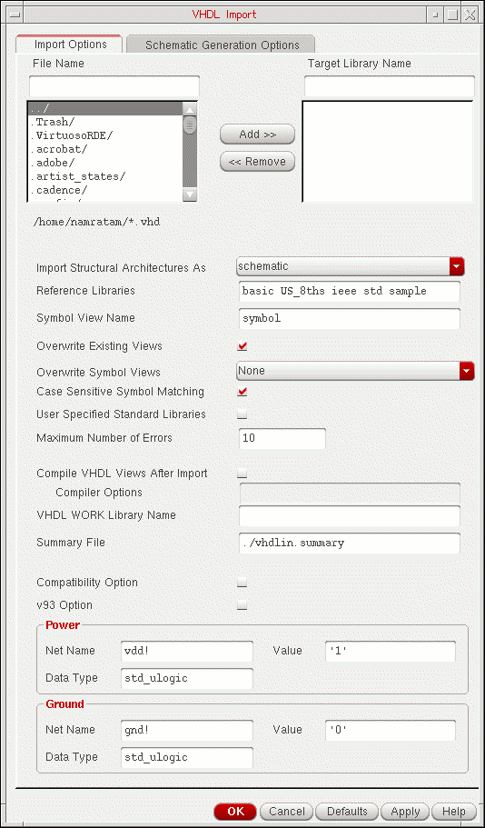

2
Getting Started with VHDL In
This chapter discusses the following:
- Introduction
- Setting Up the Library Environment
- Starting VHDL In in Standalone Mode
- Starting VHDL In with Virtuoso Design Environment
- Using SKILL APIs
Introduction
You can use VHDL In in the following modes:
-
Interactive mode
You can launch the graphical user interface of VHDL In from the Command Interpreter Window (CIW) -
Standalone mode
You can use VHDL In from the command prompt
Either way, you must set up your library environment before you can use VHDL In.
Setting Up the Library Environment
To set up the library environment required for VHDL In, you install the latest Cadence software in the installation directory and set up a cds.lib file. The cds.lib file includes the libraries you need to import designs.
Setting Up the cds.lib File
Create the cds.lib file in your home directory or the directory in which you run Cadence software.
In the cds.lib file, you include a list of paths to
-
The five required reference libraries:
basic,sample,US_8ths,std, andieee - Additional libraries you need
You can add the required reference libraries and additional libraries you need by using a text editor or by using the Virtuoso® Design Environment CIW.
You can create a new library in the CIW without creating a cds.lib file beforehand. In this case, the Library Manager tool creates a cds.lib file in the directory where you started VHDL In. The Library Manager tool creates additional entries in the cds.lib file for each library or design that you add or create in the CIW.
The syntax of entries for required and additional libraries in the cds.lib file is the same whether the entries are created by you or by the Library Manager tool. The syntax for an entry is
DEFINE library_name absolute_path/library_name
Using the Text Editor
You can use a text editor in an xterm window to
-
Create a
cds.libfile -
Add the required reference libraries to a
cds.libfile -
Add your own libraries to a
cds.libfile
Be sure to enter the paths to the libraries in the same case as they occur, so that these libraries can be found.
-
Use your text editor to create the
cds.libfile and open it for editing.
This example shows the command for the vi editor.vi cds.lib
-
Include the following set of reference libraries in your
cds.libfile.(Use uppercase and lowercase characters precisely as you see here.)
<dfII_install_dir> is a variable signifying the particular path you use for the Cadence installation directory.DEFINE basic <dfII_install_dir>/tools/dfII/etc/cdslib/basic DEFINE sample <dfII_install_dir>/tools/dfII/samples/cdslib/sample DEFINE US_8ths <dfII_install_dir>/tools/dfII/etc/cdslib/sheets/US_8ths DEFINE std <IUS_install_dir>/tools/inca/files/STD DEFINE ieee<IUS_install_dir>/tools/inca/files/IEEE
-
Add additional libraries you want to use.
Example entries in acds.libfile for additional design libraries areDEFINE adder /usr/designer/data/4.4.1/adder DEFINE mixed /usr/designer/data/4.4.1/mixed DEFINE msheet /usr/designer/data/4.4.1/msheet
- Write and quit the file.
Using the CIW
You can use the CIW to create a cds.lib file and add libraries to the file. Use the Library Path Editor form (labeled cdsLibEditor) to add the required reference libraries. You can use either the Library Path Editor form or the New Library form to add your own libraries to the cds.lib file.
If you create a new library in the New Library form without creating a cds.lib file beforehand, the Library Manager tool creates a cds.lib file in the directory where you started VHDL In. The Library Manager tool creates entries in the cds.lib file for each library or design that you add or create in the CIW.
If you use other Cadence applications (and have more than one cds.lib file) in addition to VHDL In, be sure that you start Virtuoso® Design Environment from a directory that contains the cds.lib file you want to use for VHDL In.
Adding the Required Reference Libraries or Additional Libraries
Use the Library Path Editor form in the CIW to:
-
Add the five required reference libraries (
basic,sample,US_8ths,std, andieee) to thecds.libfile. - Specify new libraries for designs you create.
-
Edit the names and paths to libraries already in the your
cds.libfile.
To use the Library Path Editor form:
-
Enter in an xterm window
virtuoso &
The CIW appears. -
In the CIW, select Tools – Library Path Editor
The Library Path Editor form appears.
This form displays any libraries currently in yourcds.libfile.
-
In the Library and Path text fields, enter the library name and path for the required reference libraries, or for additional libraries you want to use.
Use lowercase for the IEEE library name in the Library field, but use uppercase for the IEEE library name in the Path field. This way, you accommodate the name mapping that the parser performs on the reference libraries when it parses a design you are importing. - Select File – Exit.
Adding Only Additional Libraries
You can use the New Library form (in addition to the Library Path Editor form) to add additional design libraries to the cds.lib file.
-
Enter in an xterm window
virtuoso &
The CIW appears. -
In the CIW, select File – New – Library
The New Library form opens. -
Enter the name of the new library and the path to its location
.You can use the scroll bar in the directory window to fill in the library path field. Click a directory name to enter it into the path field. -
In the Name field, specify the library name.
Design_01
-
In the field below the Directory list box, enter the path to the new library.
<dfII_install_dir>/Design_01
<dfII_install_dir> is a variable signifying the particular path you use for the Cadence installation directory. -
Click Do not need process information.
Because the library does not contain layout data, you do not need a technology file. -
Click Apply.
The form stays open, so that you can create another library.
When you create the last new library, click OK instead of Apply, to close the New Library form.
The new library is created. -
In the CIW, select Tools – Library Manager.
The Library Manager window opens, displaying the name of the library you just created. -
Click the name of the new library.
The contents of the new library (ieee) appear in the Cell column.
In the following example, the Show Categories option is turned off and you can see references to the five required libraries (basic, sample, US_8ths, std, and ieee) and user-defined library cdsDefTechLib.
The contents of the library you selected appear in the Cell column. If problems occur during the creation or addition of the new library, error and warning messages appear in the Messages window.
cds.lib, VHDL In fails to create a schematic. It creates a behavioral view instead of a schematic.Starting VHDL In in Standalone Mode
If you do not have Virtuoso® Design Environment running (no CIW is displayed), you can run VHDL In in standalone mode.
-
In a terminal window, type the following command:
vhdlin -param pfn -f fn <vfn1, vfn2, ...>
where
thepfnargument to the-paramoption indicates the name of the file that contains parameters. The contents of this file are described in detail in Chapter 8, “Creating a Parameter File.”
Thefnargument to the-foption indicates the path and file name of the file that contains the names of the VHDL design unit files<vfn1, vfn2, ...>
is an optional list of the individual VHDL files.
Starting VHDL In with Virtuoso Design Environment
To start VHDL In with Virtuoso® Design Environment
-
Enter in an xterm window
virtuoso &
The Command Interpreter Window (CIW) for Virtuoso® Design Environment appears.
To start the process of importing a design, open the VHDL Import form. You can access this form either through menu options in the CIW, or with a SKILLcommand at the command prompt in the CIW.
CIW Menu Options
You can use either of two sequences of menu options in the CIW to access the VHDL Import form:
File – Import – VHDL
To access VHDL In through the CIW.
-
On the CIW, choose File – Import – VHDL.
The VHDL Import form opens.
The Files List Box shows only files with a.vhdsuffix and all directories in the local directory.
All the different fields on the form are explained in
Tools – VHDL Tool Box
To open VHDL Import from VHDL Toolbox:
-
On the CIW, choose Tools – VHDL Tool Box.
The VHDL Toolbox form appears.
-
Choose Commands – Import.
The VHDL Import form appears.
Using SKILL APIs
You can use various SKILL APIs to operate VHDL In. using SKILL APIs, you can perform the following operations:
- Build and display the VHDL Import form.
- Import a list of VHDL source files into the specified library with the given parameters.
- Translate a VHDL cellview into an intermediate pin list format.
- Generate VHDL views from an intermediate pin list format.
- Define SKILL procedures and register this information with the VHDL Toolbox using a SKILL routine.
For information on using SKILL functions of VHDL In, see HDL Import and Netlist-to-Schematic Conversion SKILL Reference.
Return to top